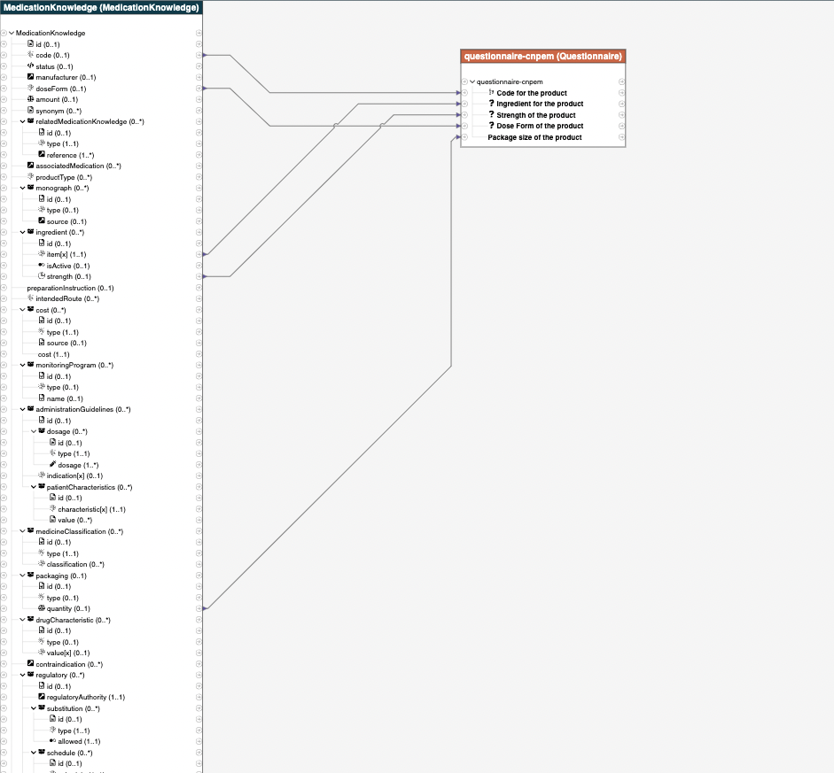

0.1.0 - ci-build
medicationIG - Local Development build (v0.1.0). See the Directory of published versions
The relationship is as follows:

The StructureMap is:
map "http://infarmed.pt/insertMed/" = "qr2med"
uses "http://hl7.org/fhir/StructureDefinition/QuestionnaireResponse" alias QuestionnaireResponse as source
uses "http://hl7.org/fhir/StructureDefinition/MedicationKnowledge" alias MedicationKnowledge as target
group doseform(source src: QuestionnaireResponse, target tgt: MedicationKnowledge) {
src.item as item where linkId.value in ('packsize-cnpem') -> tgt as packsize then packaging_format(item,packsize) "rule for packsize";
src.item as item where linkId.value in ('code-cnpem') -> tgt as code then code_format(item, code) "rule for code";
src.item as item where linkId.value in ('doseform-cnpem') -> tgt as doseform then doseform_format(item, doseform) "rule for doseForm";
src.item as item where linkId.value in ('strength-cnpem') -> tgt as strn then strn_format(item, strn) "rule for strength";
src.item as item where linkId.value in ('ingredient-cnpem') -> tgt as ingre then ingre_format(item, ingre) "rule for ingredient";
}
///pack size
group packaging_format(source src, target tgt) {
src.answer as ab -> tgt.packaging as pack then itemcoding_quantity(ab,pack); // copy ab inside aa
}
group itemcoding_quantity(source src, target tgt ) {
src -> tgt.quantity=(src.valueQuantity) "xx";
}
////Code
group code_format(source src, target tgt) {
src.answer as ab -> tgt.code as code then itemcoding_code(ab,code); // copy ab inside aa
}
group itemcoding_code(source src, target tgt: CodeableConcept ) {
src -> tgt.coding as y then codingcode(src, y) "xx";
}
group codingcode(source src, target tgt : Coding) {
src -> tgt.code = (src.valueInteger) "xy1";
src -> tgt.system = 'http://snomed.info/sct' "xy2";
src -> tgt.display = 'FINDRISC (Finnish Diabetes Risk Score) score' "xy3";
}
///Dose Form
group doseform_format(source src, target tgt) {
src.answer as ab -> tgt.doseForm as df then cc_df(ab,df); // copy ab inside aa
}
group cc_df(source src, target tgt: CodeableConcept) {
src -> tgt.text="dose form" "text";
src -> tgt.coding = (src.valueCoding) "fsf";
}
///ingredient